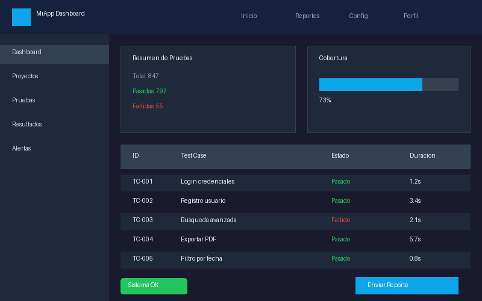
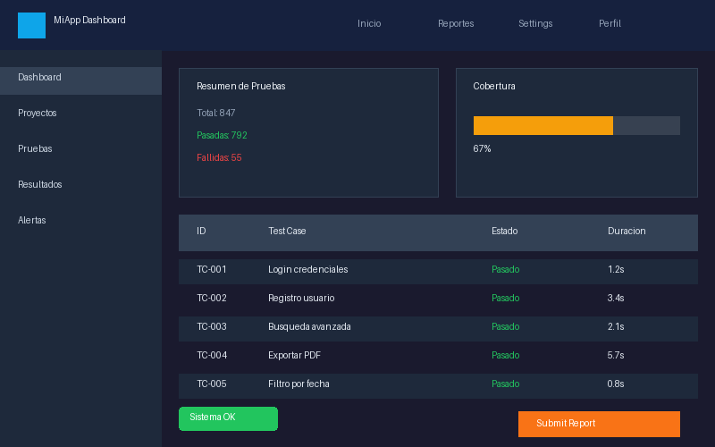

QA en la nueva era
Inteligencia Artificial aplicada a Quality Assurance
¿Qué cambió en los últimos 2 años?
- GitHub Copilot, ChatGPT, Claude, Gemini — de curiosidad a herramienta diaria
- La IA genera código, tests, documentación y análisis En segundos, no horas
- La velocidad de entrega se aceleró — y el QA tiene que responder
- No es hype pasajero: es una nueva capa de tooling que llegó para quedarse
La IA genera... todo (o casi)
Lo que puede hacer
- Escribir código funcional desde un prompt
- Generar test cases desde user stories
- Analizar logs y sugerir root cause
- Crear documentación y reportes
Lo que NO puede hacer
- Entender su negocio
- Conocer a sus usuarios
- Reemplazar su contexto y criterio
- Decidir qué es "suficientemente bueno"
La pregunta correcta no es "¿me va a reemplazar?" sino "¿cómo la uso para ser más efectivo?"
Evolución del rol QA
Cada fase agrega, no elimina. El criterio de testing manual sigue siendo esencial.
El nuevo QA: Orquestador
- Define QUÉ probar — la IA ayuda con el CÓMO
- Es dueño de la estrategia de calidad
- Evalúa y filtra el output de la IA
- Conecta herramientas, agentes y procesos
- Toma la decisión final: ¿esto sale o no?
Lo que dicen vs lo que pasa
Más mitos que hay que soltar
5 cosas que la IA hace mejor que yo
- Generar test cases desde user stories En segundos, con cobertura amplia como primer borrador
- Sugerir escenarios que no consideré La IA no tiene mis sesgos — piensa en edge cases distintos
- Detectar gaps en cobertura Peer review instantáneo de mi test plan
5 cosas (continuación)
- Documentación y reportes repetitivos Bug reports, resúmenes de sprint, release notes — lo tedioso
- Acelerar automatización (scripts base) Genera el scaffold de un test en Playwright/Cypress en segundos
Donde la IA falla (y falla feo)
- Redundancia y ruido: genera 20 test cases donde 5 bastan Más no es mejor — el exceso de tests es un costo de mantenimiento
- Genérica sin contexto: sin instrucciones claras, da resultados insípidos El mismo prompt vago da el mismo resultado vacío
- No entiende negocio como un humano: no sabe que los viernes hay deploy freeze Las reglas implícitas de su equipo no existen para la IA
- Siempre requiere revisión humana Puede generar tests que pasan pero no validan nada útil
IA en cada fase del ciclo de testing
La IA no es solo "generar tests". Se integra en todo el STLC cuando se usa con criterio.
La clave: saber DÓNDE aporta valor y dónde solo agrega ruido.
Requirements y Planning
Requirements
- Detectar ambigüedades en las historias de usuario
- Generar preguntas para el PO/BA
- Sugerir test ideas iniciales desde los ACs
- Identificar dependencias y riesgos tempranos
Planning
- Proponer estructura del plan de pruebas
- Identificar áreas de riesgo alto
- Priorizar por impacto al negocio
- Estimar esfuerzo inicial de testing
Excelente para el "first draft" que después usted refina con su conocimiento del sistema.
Design, Execution y Reporting
¿Qué modelo conviene para QA?
| Criterio | GPT-4o | Claude Opus/Sonnet | Gemini Pro | Modelos locales |
|---|---|---|---|---|
| Precisión tests | Alta | Alta | Media-Alta | Media |
| Costo | Medio | Medio | Bajo | Gratis* |
| Privacidad | API/Enterprise | API/Enterprise | API/Enterprise | Total |
| Contexto | 128K | 200K | 1M+ | 8-32K |
| Velocidad | Rápido | Medio | Rápido | Variable |
* Costo de hardware. La tabla es referencial — los modelos evolucionan constantemente.
Reglas de decisión
- Datos sensibles → Modelo local (Ollama) o API enterprise con DPA Nunca mandar datos reales de clientes a APIs públicas
- Razonamiento complejo → Modelo grande (GPT-4o, Claude Opus) Para análisis profundo de specs, edge cases complejos
- Alto volumen / bajo costo → Modelo menor (GPT-4o-mini, Haiku) Generación masiva de test data, templates repetitivos
- Velocidad crítica → Endpoints optimizados o modelos edge Integración en CI/CD, feedback loops rápidos
No es one-size-fits-all. La decisión depende del caso de uso.
Prompt + Context Engineering
El prompt es solo la mitad. El CONTEXTO es lo que marca la diferencia entre un resultado genérico y uno útil.
Errores más comunes
- Prompts vagos: "Genere tests para el login"
- Sin contexto técnico: ¿qué framework? ¿qué DB?
- Sin formato esperado: la IA elige cualquier formato
- Sin ejemplos: no conoce su estándar de calidad
- Sin restricciones: genera tests de todo tipo sin foco
Tips para QA
- Incluya siempre el rol: "Actúe como QA senior"
- Describa la app y su stack técnico
- Pegue los ACs textuales de la story
- Especifique el formato: tabla, Gherkin, script
- Pida que identifique gaps y ambigüedades
- Itere: el primer resultado es un punto de partida
La fórmula del buen prompt
No es magia, es ser específico. Vamos a verlo en acción...
Prompt Builder para QA
Generá el prompt para ver un ejemplo de test cases.
Asistentes de código: Copilot, Cursor, Windsurf
Qué hacen bien
- Autocompletar patrones de test conocidos
- Generar scripts base desde comentarios
- Sugerir assertions relevantes al contexto
- Scaffolding de page objects y helpers
Aceleración realista: 30-50% en tareas repetitivas.
Riesgos
- Over-reliance: aceptar sin leer
- Código que "parece bien" pero tiene bugs sutiles
- Selectores frágiles o assertions débiles
- Deuda técnica oculta en código generado
LLMs locales: Ollama y cuándo convienen
Ventajas
- Privacidad total: datos nunca salen de tu máquina
- Sin costos de API: una vez descargado, es gratis
- Funciona offline: aviones, VPNs, redes restrictivas
- Compliance friendly: ideal para regulaciones estrictas
Trade-offs
- Menos precisos que modelos cloud grandes
- Requieren hardware decente (16GB+ RAM)
- Ventanas de contexto más limitadas (8-32K)
- Setup y mantenimiento adicional
Cuándo usarlos: datos sensibles, compliance estricto, prototipado rápido, ambientes air-gapped.
QA Agents: ¿Qué son?
Un agente es más que una llamada a un LLM. Es un sistema que planifica, ejecuta, evalúa y ajusta de forma autónoma.
No es un chatbot — es un worker autónomo con supervisión. El QA define el objetivo y revisa el resultado.
Ejemplos de agentes + MCPs
Ejemplos de Agentes QA
- Agente Test Plan: genera plan desde specs del sprint
- Agente Playwright: escribe y ejecuta tests E2E
- Agente Autocorrección: arregla tests rotos automáticamente
- Agente A11y: audita accesibilidad y genera reporte WCAG
MCPs (Model Context Protocol)
- Estandarizan cómo los agentes acceden a herramientas externas
- Piense en APIs pero para agentes IA
- Ejemplo: MCP para Jira, GitHub, Playwright, Jenkins
- Permiten que un agente lea tickets, ejecute tests, y publique resultados
Comparación Visual: IA en QA Visual


VibeCoding y VibeTesting
- VibeCoding: escribir código dejándose llevar por la IA sin estructura clara
- VibeTesting: lo mismo pero para testing — "que la IA genere los tests"
- Suena cool, pero es riesgoso sin dirección
- La IA amplifica su dirección — si su dirección es vaga, el resultado es vago
- Tenga claro el objetivo antes de promptear
- Defina criterios de aceptación del output
- Itere: primer resultado → feedback → mejora
Guardrails y buenas prácticas
Reglas no negociables
- Always human review — nunca confiar ciegamente
- Nunca datos sensibles a APIs públicas sin DPA
- Documentar qué fue asistido por IA para auditoría
- Versionar prompts como código — son activos del equipo
Checklist antes de confiar
- ¿El test case es relevante para la feature?
- ¿Cubre el caso de uso REAL, no uno inventado?
- ¿Los datos de prueba son válidos?
- ¿Las assertions validan lo correcto?
- ¿Consideró escenarios negativos?
- ¿Corre sin modificaciones, o necesita ajustes?
Conclusión
"La IA no reemplaza a un QA. Reemplaza las horas que un QA desperdicia en tareas mecánicas."
"La IA multiplica lo que usted ya sabe. Si sabe poco, multiplica poco. Si sabe mucho, es imparable."
El futuro del QA no es sin humanos — es con humanos potenciados que usan IA como su herramienta más poderosa.
Preguntas y Discusión
¿Qué herramienta probarías primero mañana?
Gracias por su tiempo y atención.